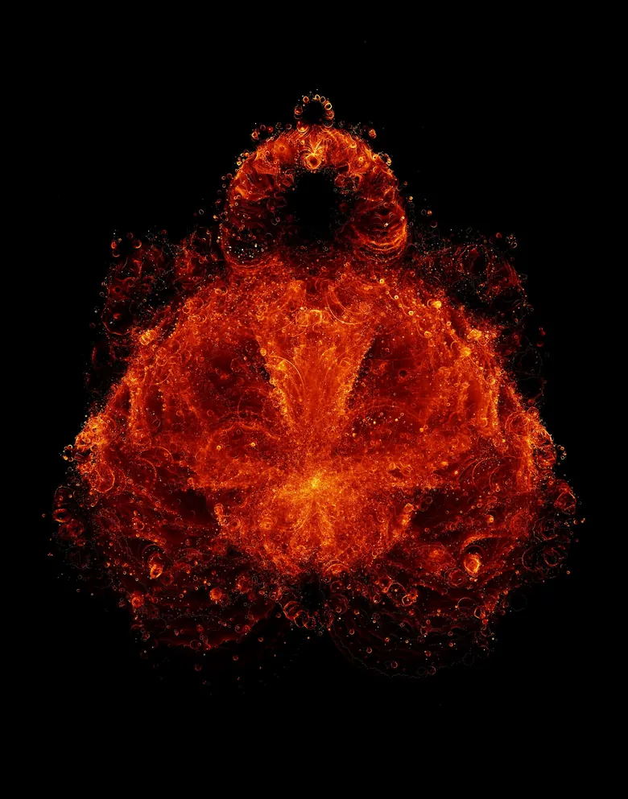
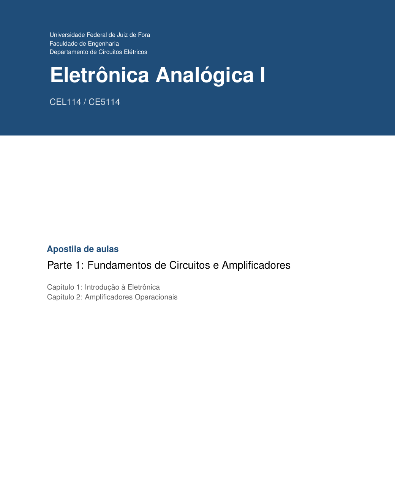

Library
Courses
Courses by NIPS-CERN and by the people who work with it, each with its material: slides, handouts, study guides, code and readings.

CourseLimiarRedes neurais, do neurônio ao fractalO curso de redes neurais do SIENA, do neurônio artificial ao perceptron multicamadas.Period25/09 a 11/12/2026Classes online2 / 10Open the courseBuddhabrot: Johann Korndoerfer, Wikimedia Commons, CC BY 3.0 DE
CourseEletrônica Analógica IAmplificadores, diodos e transistoresA disciplina CEL114 / CE5114 da Faculdade de Engenharia da UFJF, na apostila de aulas do professor Victor Mendes Ribeiro.Course codeCEL114 / CE5114Parts online3 / 3Open the courseCapa e figuras: a apostila do Prof. Victor Mendes Ribeiro